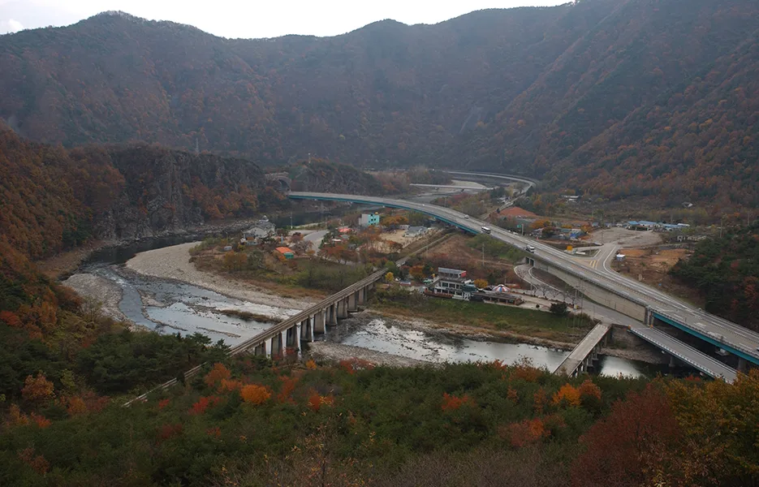
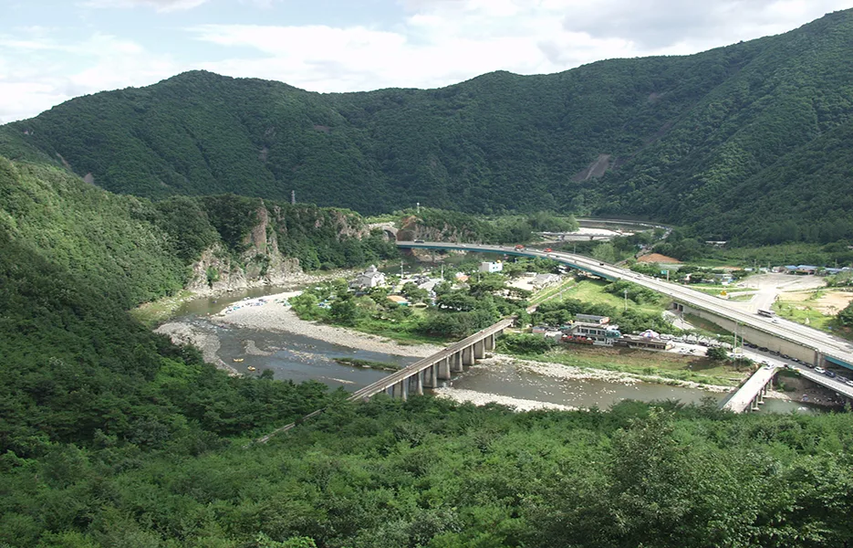
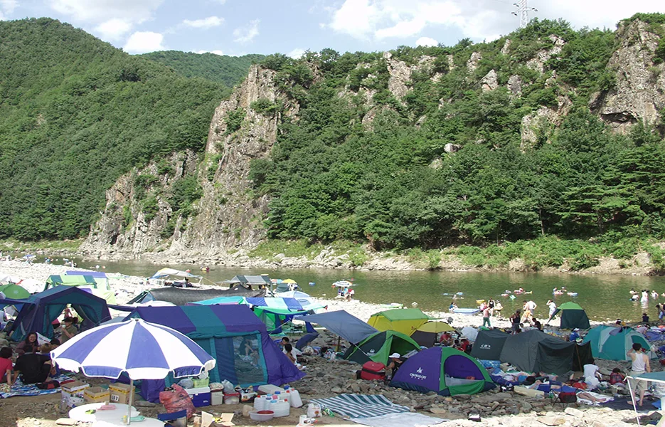
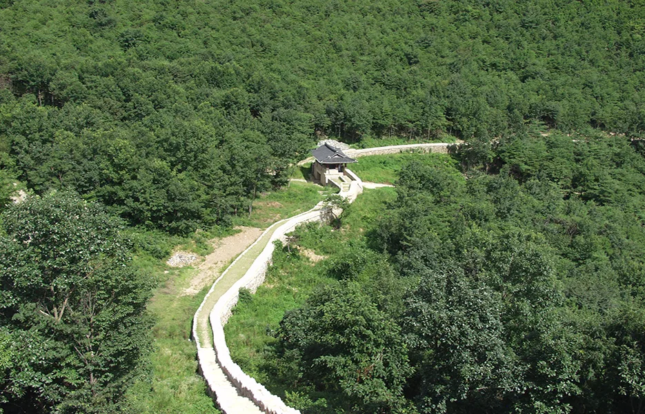

▲ 가을빛으로 물든 진남교반. 영강 위로 옛 철교와 국도교, 고속도로 교량이 겹쳐 놓여 있다
영강이 굽이치는 협곡 위로 옛 철교 하나와 국도교 두 개가 나란히 걸려 있다. 여기에 고속도로 교량까지 겹쳐 보이는 자리, 경북 문경시 마성면 신현리의 진남교반이다. 1933년 대구일보사가 주최한 '경북팔경' 선정에서 당당히 1위를 차지했고, 지금도 '문경의 소금강'이라 불린다. 다만 진남교반 하나만 보고 돌아가기엔 아쉽다. 바로 옆에는 명승 제31호로 지정된 옛길 토끼비리가 있고, 여름이면 오미자테마터널과 래프팅, 캠핑객이 몰린다. 이 기사는 진남교반의 유래부터 토끼비리·자전거길 연계, 단풍 시기까지 방문 순서대로 정리했다.
1. 진남교반이란 — 경북팔경 1위, '문경의 소금강'

▲ 여름철 진남교반. 영강이 S자로 굽이치는 자리에 기암괴석과 층암절벽이 발달해 있다 ⓒ 문경시 문화관광
진남교반은 문경시 문화관광 자료에 따르면 "맑고 푸른 강 위에 가지런히 철교와 함께 3개의 교량이 모습을 나타내어 자연과 인공의 묘한 조화를 나타내는 곳"으로 소개된다. 1933년 대구일보사가 주최한 경북팔경 선정에서 1위를 차지했고, 진남휴게소 폭포 왼쪽 암벽에는 '경북팔경지일(慶北八景之一)'이라 새긴 석비가 남아 있다. 봄이면 진달래와 철쭉이 강변을 붉게 물들이고, 계절마다 풍경이 천태만상으로 바뀐다고 해서 예로부터 '문경의 소금강'으로 불렸다.
여름철에는 강변의 모래사장과 울창한 노송이 어우러져 피서객과 캠핑객이 몰리는 장소이기도 하다. 밤이면 강변에 늘어선 텐트촌의 불빛이 달빛과 어우러지는 풍경도 이 일대에서 유명하다.

▲ 여름철 진남교반 강변 야영 풍경. 모래사장과 노송이 어우러져 피서지로도 인기가 많다 ⓒ 문경시 문화관광
2. 명승 제31호 토끼비리 — 절벽에 새긴 천년 옛길

▲ 고모산 자락을 따라 이어지는 토끼비리 옛길. 영강 절벽을 깎아 만든 잔도로, 2007년 명승 제31호로 지정됐다 ⓒ 문경시 문화관광
진남교반 바로 옆, 고모산 자락에는 국가유산포털에 등재된 명승 제31호 문경 토끼비리가 있다. 2007년 12월 17일 지정된 이 옛길은 영강 수면으로부터 10~20m 위 석회암 절벽을 깎아 만든 잔도(棧道)로, 총연장은 2km를 조금 넘는다. 삼국시대 신라의 성곽인 고모산성과 맞닿아 있어, 예부터 영남과 한양을 잇는 교통로 구실을 했던 것으로 전해진다. 절벽을 따라 걷는 길이라 험해 보이지만, 실제로는 암벽을 깎아 노면을 평탄하게 다듬어 두어 도보로 걷기에 무리가 없는 편이다.
참고로 '진남교반이 명승으로 지정돼 있다'고 소개되는 경우가 있는데, 문경시·한국관광공사 자료에서 확인되는 진남교반 자체의 공식 명승 지정 사실은 없다. 명승으로 지정된 쪽은 바로 옆의 토끼비리다. 두 곳이 사실상 같은 협곡을 이루고 있어 혼동되는 경우가 많으니 참고하면 좋다.
토끼비리는 고모산성 주차장 또는 진남휴게소 두 곳에서 진입할 수 있다. 진남휴게소 주차장에서는 오미자 테마터널 옆 산책로를 따라 고모산성과 토끼비리를 함께 둘러볼 수 있어, 진남교반 방문객 상당수가 이 코스를 함께 걷는다.
| 구분 | 내용 |
|---|---|
| 진남교반 위치 | 경북 문경시 마성면 신현리(점촌에서 3번 국도로 약 10km) |
| 토끼비리 지정 | 명승 제31호(2007년 12월 17일 지정), 총연장 2km 남짓 |
| 진입로 | 고모산성 주차장 또는 진남휴게소(문경대로 1356) |
| 진남휴게소 문의 | 054-571-1252 |
| 대중교통 | 문경읍·가은행 시내버스 10~15분 간격 |
| 자가용 | 중부내륙고속도로 문경새재IC, 또는 중앙고속도로 영주IC → 예천 → 호계 → 마성 |
3. 오미자테마터널·자전거길·래프팅 — 즐길거리
▲ 여름철 영강에서 즐기는 래프팅. 기암절벽 사이를 지나는 코스로 진행된다 ⓒ 문경시 문화관광
진남휴게소 주차장 인근에는 오미자 테마터널이 있다. 원래 폐터널을 활용한 공간으로, 여름철에는 시원한 실내 온도 덕분에 더위를 식히려는 방문객이 많이 찾는다(유료). 터널을 지나면 앞서 소개한 고모산성·토끼비리 산책로로 이어진다.
문경은 국토종주 자전거길 중 새재 자전거길이 지나는 구간이기도 하다. 진남교반 인근에서는 영강 우안을 따라 불정교와 견탄교 사이 구간이 자전거길로 조성돼 있어, 라이더들이 진남교반의 협곡 풍경을 옆에 두고 달릴 수 있다. 진남역에서는 철로 자전거(레일바이크) 체험도 가능해, 자전거를 직접 타지 않아도 비슷한 경험을 할 수 있다.
여름철에는 영강에서 래프팅도 운영된다. 기암절벽 사이 협곡을 따라 내려가는 코스로, 강변 야영과 함께 진남교반을 즐기는 대표적인 방법으로 꼽힌다. 다만 운영 시기와 업체는 매년 달라질 수 있어 방문 전 확인이 필요하다.
4. 단풍 시기 — 문경새재와 비슷한 10월 말~11월 초
진남교반의 단풍 절정 시기를 별도로 공식 발표한 자료는 확인되지 않는다. 다만 같은 문경시 권역인 문경새재 일대가 통상 10월 말에서 11월 초 사이 단풍이 절정에 이르는 것으로 알려져 있어, 인접한 진남교반·토끼비리 일대도 비슷한 시기에 물들 것으로 추정할 수 있다. 정확한 절정 시점은 해마다 기온과 강수량에 따라 달라지므로, 방문 직전 지역 뉴스나 문경시 문화관광 홈페이지의 단풍 소식을 확인하는 편이 안전하다.
단풍철에는 인근 문경새재 도립공원에서 열리는 문경사과축제 등과 겹쳐 방문객이 몰리는 경우가 많다. 진남교반은 문경새재보다는 상대적으로 한적한 편이지만, 주차 공간이 넉넉하지 않으니 주말에는 오전 일찍 방문하는 것이 좋다.
✅ 단풍철 방문 시 참고할 점
· 단풍 절정 예상 시기: 10월 말~11월 초(문경새재 일대 기준 추정, 해마다 변동)
· 진남교반 자체는 별도 입장료·주차료가 없는 것으로 알려져 있으나 방문 전 최신 정보 확인 권장
· 토끼비리·고모산성 코스는 오르막 구간이 있어 걷기 편한 신발 준비 필요
5. 방문 팁 — 접근성과 유의사항
대한민국 구석구석 자료에 따르면 진남교반 일대에는 장애인 편의시설(화장실·엘리베이터·전용주차·휠체어 대여 등)이 별도로 갖춰져 있지 않은 것으로 안내된다. 거동이 불편한 가족과 함께라면 사전에 진남휴게소(054-571-1252)나 문경시 문화관광과에 접근 가능한 구간을 문의해보는 것이 좋다. 반려동물 동반 방문도 가능하지만 현지 사정이 계절과 시간대에 따라 달라질 수 있어 미리 확인하는 편이 안전하다.
대중교통으로는 문경읍이나 가은 방면 시내버스가 10~15분 간격으로 운행돼 접근이 비교적 수월하다. 자가용을 이용한다면 중부내륙고속도로 문경새재IC에서 점촌·상주 방향으로 빠지거나, 중앙고속도로 영주IC에서 예천·호계를 거쳐 마성면으로 진입하면 된다.
✅ 문경 진남교반, 가기 전 체크리스트
· 1933년 경북팔경 선정 1위, 영강 위 세 개의 다리가 만드는 '문경의 소금강'
· 진남교반 자체는 별도 명승 지정이 없으며, 바로 옆 토끼비리가 명승 제31호(2007년 지정)
· 토끼비리·고모산성은 진남휴게소 또는 고모산성 주차장에서 진입 가능
· 오미자테마터널(유료), 새재 자전거길 불정교~견탄교 구간, 진남역 철로자전거로 연계 가능
· 여름철엔 영강 래프팅·강변 캠핑, 가을엔 문경새재와 비슷한 10월 말~11월 초 단풍
· 장애인 편의시설이 제한적이므로 거동이 불편하다면 사전 문의 권장